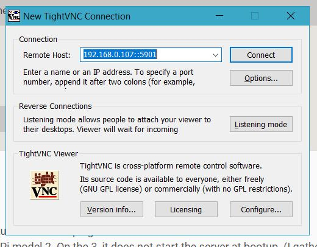

Setup RaspberryPi
Resources
RaspberryPi
SD card (recommended 8Gb)
SD card reader (optional)
Internet connection thingy (choose 1)
Ethernet cable (with access to ethernet internet)
USB Wifi adapter
Software
Raspberry OS Raspbian
SD card Flashing software Etcher
SSH connection software Putty
VNC connection software TightVNC
IP address scanning software AngryIP
Overview
We will be trying to setup a RaspberryPi without any keyboard, mouse or monitor. In other words a "Headless" connection.
This can be achieved by:
1. Connecting the RPi to the internet without an interface
2. SSHing into the RPi to start a VNC
3. Using a VNC for remote control using your PC
Setting up RaspberryPi
Download any Raspberry OS that you want and flash it using Etcher to your SD card
I will be using Raspbian Strech Lite because I need all the extra space I can get from the RPi
After flashing is complete with verification by Etcher we can start by conneting the RPi to the internet
Connecting to the web
Ethernet
Connect RPi to internet using ethernet
Plug in and go to the next part
Wifi
Headless connection
Using a card reader, insert in the SD card and open up the "boot" partition
Make a new file named "wpa_supplicant.conf"
In the file add in the following
country=fr
update_config=1
ctrl_interface=/var/run/wpa_supplicant
network={
scan_ssid=1
ssid="RouterName"
psk="Password"
key_mgmt=WPA-PSK
}
Change "RounterName" to the name of the Wifi you want to connect
Change "Password" to the password of the Wifi
If your wifi is using WPE, change "key_mgmt=WPA-PSK" to
key_mgmt=NONE
If your wifi does not have a password, just enter in the ssid, delete the "psk" and "key_mgmt" line
Its okay if your country code is different....
SSHing to 3.1415265
Before pluging the SD card into the RPi, also in the "boot" partition create a file called "ssh". No extension, no nothing, just a file that is called "ssh", this is to prompt the RPi to enable SSH connection
Next, plug the SD card into the RPi and also the Wifi adapter(if you are using Wifi for connection)
Then, after waiting for a bit for the RPi to boot and connect to the Wifi, use AngryIP to get the IP of your RPi, it should be under the host name raspberrypi
Open Putty and copy the IP adress of the Rpi into the blank. Allow the port to be default (22) and select SSH. Connect!
When SSH connects, login as (if you didn't change it)
id=pi
password=raspberry
Now with SSH connection complete, we will setup the VNC
Veins N Capillary poping up trying to do this
The reason why you would need a VNC connection is so that there is a graphical interface, an SSH can only provide a comandline interface control
To continue, now having a SSH control to the Rpi, lets get the VNC software.Run the following
sudo apt-get upgrade
sudo apt-get update
sudo apt-get install tightvncserver
If installation is complete, start the vnc!
/usr/bin/tightvncserver
When the code is executed, it will prompt for a password so just give it a password
After that, it will ask for a viewonly password, just no it
With the VNC on your RPi running, go to your PC and start the TightVNC Viewer (search it up its not automaticall in your desktop...)
using the same IP as when you SSH, put it as the "Remote Host" in the following fashion
192.168.0.10::5901
Change "192.168.0.10" to your own IP address, but the port number should be the same
Then connect, it will prompt for a password so enter the password you setup previously and you are connected!
CONGRATZ!!!!
Discalmer
Take note that the VNC will not automatically start up when you start the RPi, you have to SSH into it to start the VNC first before connecting to it using VNC
Also take note that the "Lite" version of the Raspbian does not contain a GUI, so VNCing into it will produce a error. If you want to have the graphical interace, run the following
sudo apt install raspberrypi-ui-mods